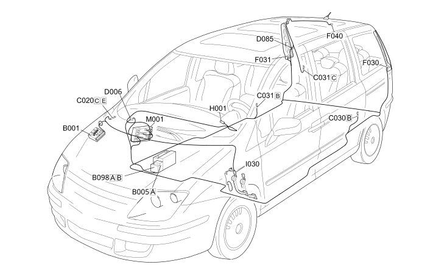

E2021 BRAKE LIGHTS - COMPONENT LOCATION
- Path
- Electrical equipment > 1 ELECTRICAL FUNCTIONS > E20 EXTERIOR LIGHTING > E2021 BRAKE LIGHTS > E2021 BRAKE LIGHTS - COMPONENT LOCATION
- Kind
- component location drawing
- Applies to
- engines: 2.0 16V JTD, 2.2 16V JTD; all production periods; only with equipment: MY 2005
- Interactive page
- https://sloeber94.github.io/elrnDB-fUlss/en/#/179008483
Applies to: engines: 2.0 16V JTD, 2.2 16V JTD; all production periods; only with equipment: MY 2005

Component code | Description | Reference to the assembly |
|---|---|---|
ENGINE COMPARTMENT JUNCTION UNIT | ||
MAXI FUSE BOX | - | |
ADDITIONAL FUSE BOX | - | |
PASSENGER SIDE DASHBOARD EARTH | - | |
LEFT REAR EARTH | - | |
RIGHT REAR EARTH | - | |
FRONT/REAR COUPLING | - | |
REAR/TAILGATE COUPLING | - | |
LEFT REAR LIGHT CLUSTER | ||
RIGHT REAR LIGHT CLUSTER | ||
ADDITIONAL REAR LIGHT (THIRD BRAKE LIGHT) | ||
Ignition switch | ||
BRAKE PEDAL SWITCH | ||
BODY COMPUTER |
Topics linked from this page (18)
- 5505A MULTI-FUNCTION COMPONENTS
- 5520A IGNITION SWITCH
- 5540A LIGHTING
- 5550D BRAKE AND REVERSING LIGHTS
- B001 ENGINE COMPARTMENT JUNCTION UNIT
- B005 MAXI FUSE BOX
- B098 ADDITIONAL FUSE BOX
- C020 PASSENGER SIDE DASHBOARD EARTH
- C030 LEFT REAR EARTH
- C031 RIGHT REAR EARTH
- D006 FRONT/REAR COUPLING
- D085 REAR/TAILGATE COUPLING
- F030 LEFT REAR LIGHT CLUSTER
- F031 RIGHT REAR LIGHT CLUSTER
- F040 ADDITIONAL REAR LIGHT (THIRD BRAKE LIGHT)
- H001 Ignition switch
- I030 BRAKE PEDAL SWITCH
- M001 BODY COMPUTER